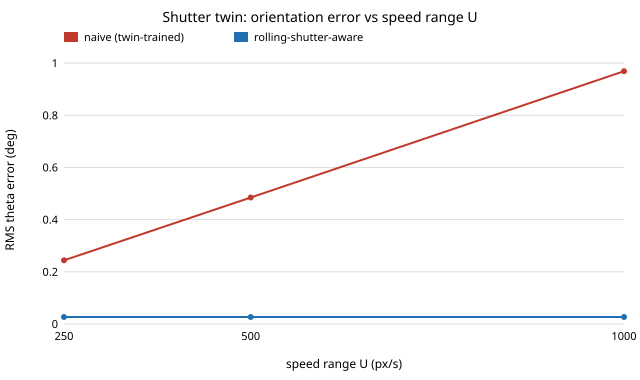

A global-shutter twin of a rolling-shutter camera ignores target motion: how biased is a twin-trained orientation estimate, and what does the same frame reveal?
research/shutter-twin
A global-shutter twin of a rolling-shutter camera ignores target motion: a moving rectangle is sheared and stretched by exact closed forms, a twin-trained orientation estimate is biased by half the edge tilt (1.79° at 1000 px/s), and one frame of a known-size target identifies pose and velocity (0.027° and 16 px/s at 0.25 px noise). Stylised.
What it found
Row r is exposed at t=rτ/H, so a moving rectangle is imaged sheared and stretched; closed-form edge normals match a row-by-row simulation. At 1000 px/s horizontal speed the vertical edges tilt 3.58° and the horizontal ones 0, so averaging the two edge families (what a global-shutter twin certifies) is biased 1.79°; 1000 px/s vertical speed makes the target 6.7% taller. One frame of a known-size rectangle identifies orientation and both velocities in closed form: with 0.25 px edge noise orientation error falls from 0.24–0.97° to 0.027° and speeds are recovered to 16 and 4.8 px/s, but vertical speed is very sensitive to the assumed size (a 5% height error moves it by about 800 px/s). Stylised: straight edges, constant velocity, known size, no real footage.
A figure from its own output

Paper, code and results
More in Digital twins & sim-to-real
- A snapshot twin of a spinning lidar ignores that the platform moves during the sweep: how biased is the map, what does one scan reveal, and what do yaw and acceleration do?A snapshot-scan twin of a spinning lidar ignores motion during the sweep: length biased by exactly
vτ/2(0.5 m at 10 m/s), parallel walls converge byvτ/2π·(1/d₁+1/d₂), one scan gives speed to 0.13 m/s, yaw scales bearings by−κβ/(1+κ), acceleration biases odometry bya·t_fwithout accumulating. - A satellite-positioning twin with white range noise certifies an error radius the real receiver does not meet: how wrong is it once multipath is correlated, and does averaging fix it?A white-noise satellite-positioning twin vs a receiver with correlated multipath: exact HDOP
√(4/n)and bias map2b/n, averaging loses the1/√Tgain (95% radius covers 33% at T=10, 5% at T=100), and a residual integrity test tuned on the twin false-alarms 21% at equal multipath. Stylised. - A point-mass twin of a rolling body ignores rotational inertia: how wrong are acceleration, slip and coast distance, and what does one calibration fix?Point-mass twin of a rolling body ignores rotational inertia: acceleration overstated by exactly
1+k, slip thresholdk tanα/(1+k)invisible, coast distance 40–100% off, one calibration cannot fix a mixed fleet. - A pinhole twin of a radially distorted camera mis-ranges the near field: how far off does a twin-trained braking policy stop, and does focal calibration fix it?A pinhole twin of a radially distorted camera mis-ranges the floor by exactly
1/(1+k₁h²/R²)(+8.1% at 1 m fork₁=−0.3), a twin-trained braking policy stops 9 cm short of 1 m, focal calibration trades the near-field error for a far-field one, and one grid image identifiesk₁. - An instantaneous-exposure twin of a finite-exposure camera certifies detection at every speed: what is the real speed limit, and what does a blur-matched filter buy back?An instantaneous-exposure twin of a finite-exposure camera certifies detection at every speed; a moving bar is an exact trapezoid (peak
C·min(1, w/d)), a twin-tuned peak detector has a hard speed limitwC/(σz), and a blur-matched box filter raises it quadratically (5–55×). - A twin with an ideal magnetometer returns the true heading: how large is the hard-iron and soft-iron error, what does it do to a compass-held path, and how much of a turn does a swing calibration need?A twin with an ideal magnetometer hides hard/soft-iron heading error: exact peaks
asin(β/B)andasin(|1−r|/(1+r)), a compass-held square misses by exactly2Lβ/B, and swing calibration error grows ×12 at a 90° arc. Stylised.
All 146 Digital twins & sim-to-real projects →
Other research topics
Proper scoring & elicitation28Effort & peer prediction9Verification games & slashing18Detection & tolerances12Markets as routers11Prediction-market design9Paying contributors8Decentralised training systems22Digital twins & sim-to-real146LLM chip design loops37Robot manufacturing loops49Ambient AI assistant46Self-replicating manufacturing34Simulation-first design64Engineered clothing45Task-specific AI accelerators31Algorithmic chip-design loops25Open-source purpose-built robots28The software-engineering loop41Adversarial human imitation33Open-source residential construction40Autonomous multi-angle capture14Sensing, imaging and 3D14Energy supply and dense energy storage10Robot societies among people10Agentic co-design of low-cost robots12Laundry-hanging robots12Machine learning on qualitative data5
Produced with AI assistance (Claude). Results are from the code in this repository and are simulated or stylised unless the abstract says otherwise; nothing here implies affiliation with or endorsement by any lab, researcher or company cited. MIT licensed.